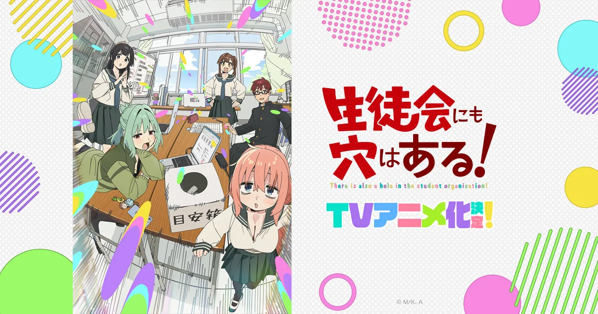

《学生会也有洞！》：一群怪人的四格日常

十月新番里有一部看着不起眼，但一集接一集停不下来。它改编自讲谈社的四格漫画，故事简单到一句话就能说完：一个理科烂到要留级的文学少年，被塞进了全是怪人的学生会。
日文原名《生徒会にも穴はある！》，作者むちまろ（中文圈常译「无知麻吕」）。2022 年 4 月起在《周刊少年Magazine》连载，单行本已经出到第 13 卷，累计发行量突破 270 万部；2023 年拿过「下一部漫画大奖」漫画部门的第一名。
「四格漫画改编的好处是节奏天然就快——不需要铺垫，笑点直接砸过来。」
一个文学少年的绝境
私立藤成学园，高一的水之江梅是标准的文科生：入学以来语文成绩几乎次次满分，征文比赛也拿过不少。
代价是理科全线崩盘。物理、化学、数学没有一个能看，照这个势头下去直接留级。班主任平塚敏深给了他一条路——去学生会，多少能加点平时分。
他去了，然后发现这屋子里坐着的没一个正常人。
这个设定之所以好笑，是因为它足够真：文科生被理科按在地上摩擦的那种无力感，很多人都体会过。
五个人，各有各的怪
- 古都吹寿子（会长，三年级）：成绩常年年级第一，文武双全，扎马尾，说话做事都像个靠谱的大人。但私下清纯得过头，还有点洁癖，包里常备一套换洗衣物。
- 照井有栖（会计，二年级）：家里很有钱，姬发式，化学是她唯一拿手的科目。第一眼不好接近，实际上是那种「看着吓人、其实很温柔」的类型。
- 尾鸟绽（宣传，初中三年级）：男生，长得很中性，索性把这一点用到极致。爱恶作剧、有点自恋，家里条件很差，基本一个人住。
- 陆奥驹絽（庶务，和梅同班）：个子小，坐梅后面，认识没几天就熟得不行。体质自带「不幸」，走哪都能遇上意外——设定里父母在她小时候因飞机失事去世，这一层让这个角色比表面看起来要沉。
- 平塚敏深（班主任兼顾问）：把梅推进学生会的人，自己却懒散得很，尤其在家里。
梅在这五个人中间，每天的主题就是被折腾。他的目标朴素得很：顺利毕业。
动画这边
- 制作：Passione
- 导演：龙轮直征（《伪恋》《大室家》）
- 系列构成·剧本：横谷昌宏（《败犬女主太多了！》）
- 角色设计·总作监：今村亮（《别当欧尼酱了！》）
- 音乐：菊谷知树
- 开播：2026 年 10 月 3 日深夜
片头曲是三月のパンタシア的〈風の中は走るっきゃないっ！〉，片尾曲由ナナヲアカリ演唱，名字就叫〈ぴ〉。
声优阵容：水之江梅——坂田将吾；古都吹寿子——白石晴香；照井有栖——石上静香；陆奥驹絽——富田美忧；尾鸟绽——河野日和；平塚敏深——内山夕实。
为什么值得看
它不搞大叙事，也不靠卖惨，就是一群人每天在活动室里胡闹。但这种「没什么正事」的日常，其实最考验角色——五个人的性格都够具体，随便拎两个出来放在一起就能出戏。
这是原作能连载到 13 卷的底子，也是这类作品最难做到的地方：热闹但不吵，怪但不烦。
如果你喜欢《日常》《辉夜大小姐》那种「一群人各怀怪癖、却相处得很好」的喜剧，这部基本不会踩雷。